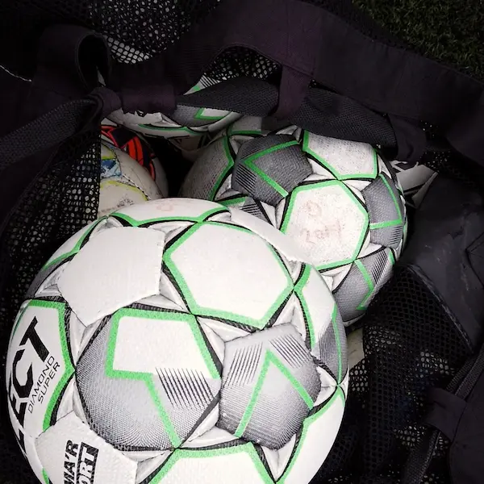

Vores vision
Vi vil være verdens førende leverandør af vidensbaserede løsninger til breddesport, som understøtter og styrker foreninger, frivillige, trænere og udøvere. Ved at styrke breddesporten skaber vi en bedre og sundere verden.
Problemet
Foreningslivet er bygget på frivillige. Men frivilligheden er i krise og faldet med 16%P siden 2015. Det er for svært og tidskrævende at blive og være frivillig, hvilket vi hver dag arbejder for at løse. Ikke kun for foreningernes skyld. Fodbold sparer Danmark for 400-1.200 mio. kr. hvert år i sundhedsmæssige omkostninger. Intet er mere effektivt til at forebygge sygdom end fysisk aktivitet. Men når foreningerne taber frivillige, mister samfundet sin vigtigste kilde til fysisk aktivitet.
Vores motivation
Foreningslivet har ikke kun formet os som mennesker, men også formet vores uddannelsesvalg og karriereveje. Der findes få mennesker, som er mere gavmilde end de frivillige. De fortjener bedre vilkår, og derfor er vores fornemmeste opgave at gøre det lettere at være forening og ikke mindst at være frivillig.
Læs mere